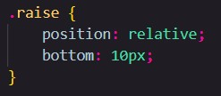
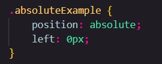
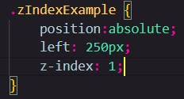

It's possible to position an element on a webpage relative to it's original position. We can change the position of an element using the "position" property. when we set the elements position to relative, we change an elements position in relation to it's Original position using normal flow!
We can raise the element 10px up from it's original position by using the bottom property. We can also move an element in this way by using the top, right and left properties after defining it's position!
coding left means we push the element away from the left of it's relative position, right from the right, top from the top and bottom from the bottom.
See the gap where "raise" used to be? relative position doesn't change normal flow, so other elements act like it's still there!
We can also position elements based on the edges of a webpage using the position property. To place an element on a specific spot on the screen, we start by setting it's position property to "absolute."
If we want to put an image on the left of the webpage, we use left: 0px;. this means that the image will be 0px away from the left of the webpage no matter what. Just like relative positioning we can use top, bottom, right and left, to instead position an element an exact distance away from the edge of the webpage.
Setting an element's position to absolute removes it from the Normal Flow, which can cause it to overlap other elements on a webpage. Luckily for us, there is a way to control overlapping elements: a property called z-index.
Z-index controls how far into the foreground or background an element is. by default, all elements on a webpage have the default z-index value of 0. To place an element in front of another, we set the z-index to a higher number like 1. any whole number works
Elements with a higher z-index number are always in front.